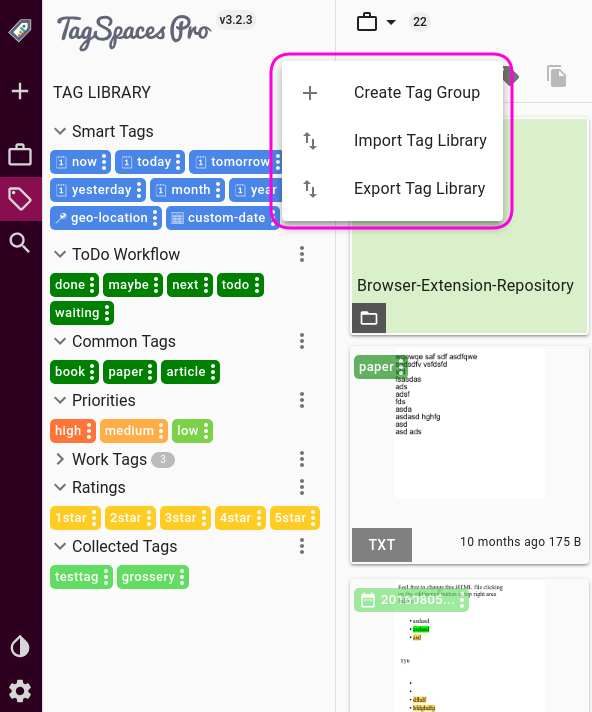

Tag Library
Table of Contents
The tag library is the place where you can manage and organize the tags with which you can tag your files and folders. To open it, you need to click the button with the tag icon (1), in the vertical navigation placed on the most left part of the application.

The tag library has its own context menu, which can be started by clicking the three dot icon on right of (2). The area marked with (3) represents a single tag group. On the top of (3) there is a three dot icon which will open the context menu of this tag group. (4) show a collapse tag group. Every tag group can be collapsed by clicking on the arrow icon in front of the tag group's name. (5) shows a special tag group used for automatically collecting new tags used in the application. (6) shows a sing tag. Every tag has its own three dot icon, which will open its context menu
Tags
The primary purpose of TagSpaces, is tagging files and organizing them. Tags are organic and integral parts of TagSpaces. By default, tags are stored as part of the filename, which makes them easily transferable between file and operating systems, without any need to synchronize databases, or do any extra work. A file can organically hold its own tags, as long as changing the filename is permittable.
pro Hint In TagSpaces PRO, you have the option to use a hidden file (a so called sidecar file) to store tags related information. This can be useful when you are not able, or not allowed to change filenames, such as with a development project, or working collaboratively on shared documents.
Tags can be anything, form descriptive labels, to categories, ratings, priorities, or dates, timestamps, and smart tags.
Hint: To learn more about the powerful tag management features TagSpaces offers, read the Tagging section
Tag groups
Tags are organized into tag groups, which are basically categories for tags with similar purpose and/or characteristics. Tag groups make it easier to navigate, select and manage tags in the system. TagSpaces comes with a few pre-defined tag groups, which you can freely modify, delete, or expand upon. The default tag groups are:
- Smart tags include various date based tags and geo location tagging. Learn more about smart tags in the tagging section
- Common Tags: This group contains two predefined tags, book, and paper. This can give you a general idea of the intended purpose of the group.
- Getting Things Done: Another useful category that can enhance your productivity, is an implementation of the GTD time management method. Predefined tags here are done, next, maybe and waiting.
- Priorities are exactly what they seem. These are color coded tags that will be easily identifiable by a simple glance. The three predefined priority tags are:
- high - dark orange background
- medium - orange background
- low - lime background
- Ratings are predefined star-rating tags with an identifiable yellow background. As the
*(asterix) character is considered a 'wildcard' on most file systems (meaning you cannot use it in filenames), giving a star rating as a filename-based tag would be somewhat difficult. With the yellow "rating" tags this problem can be easily solved, so your files can be organized in a rating-based system. - Collected Tags is a group for all other tags you have given to your files or folders that do not belong to any other group. This tag group is created automatically after the option for collecting tags is activated in tab General of the application settings.
Hint: All the tag groups except the smart tag are optional and can be removed from the tag library if they are note needed.
Tag library context menu
This menu contains the following three menu items:
- Create Tag Group - Opens the dialog for creating tag groups
- Import Tag Library - Start the process for importing tag groups in TagSpaces. Lear more in the tag sharing tutorial
- Export Tag Library - Start the process for exporting tag groups from TagSpaces. Lear more in the tag sharing tutorial

To create a new tag group, click on Create Tag Group, right underneath the tag groups. This will bring up a dialog, that will allow you to specify a name for your tag group, and the color of tags that belong to that group. color coding tags groups can help to easily distinguish between tags belonging to the same group, or otherwise share common characteristics. You can also specify the text color for the tags, which can be useful when choosing a lighter or darker background, so that the name can contrast.

Selecting the Import tag library and Export tag library options will allow you to import/export predefined tags, which you have previously created in TagSpaces. This option takes a JSON file, previously exported from (probably another instance of) TagSpaces, and imports all the tags contained within, into your system. This can be useful, when you use TagSpaces on multiple systems, or you work collaboratively with others and wish to share the same tags library. To learn more about sharing tags between systems and people, refer to the Sharing tag libraries tutorial article.
Tag group context menu
Tag groups have their own context menu, accessible by clicking the three dot icon next to the tag group's name. The context menu offers the following options and operations:
- Add tags - This will open a very simple dialog, allowing to add new tags to the group. You can add more than one tag at once, separating them with commas, like
tag1,tag2,tag3,tag4 - Edit Tag Group - will let you change the tag group's name, the default tag background, and tag text colors.
- Move Tag Group Up and Move tag Group Down - will allow you to change the tag group's position among other groups.
- Sort Tag Group - will sort all tags inside the group alphabetically. Useful after having manually added a number of tags.
- Delete Tag group - will remove the tag group from the library, with all the tags contained within.
- Collect Tags From Current Location pro - will collect all the tags used in the current location in the selected tag group.

Hint: Learn more about how to change the default tag background and text colors in the settings documentation section below.
Tag context menu
Each tag also offers its own context menu, accessible by clicking or right clicking on the tag. The displayed context menu will be slightly different depending on whether you've accessed it from the left panel tag library, or form a tag that is already added to a file. When accessed from the left panel, you will be presented with four options:
- Show Files With This Tag - is essentially a tag filter you can apply, so that only files that have the selected tag applied to them, will show.
- Edit tag - will let you change the tag's name, or background color and text color.
- Delete tag - will remove the tag from the tag group and the tag library. It will not remove it from any file or folder.

Accessing the tag context menu from the browsing area in the default perspective will show similar menu, containing the following items:
- Show Files With This Tag - is a tag filter you can apply, so that only files that have the selected tag applied to them, will show.
- Edit tag - will let you change the tag's name
- Remove tag - will remove the tag from the file or the folder on which the tags is assigned.
Hint: Editing the name of a tag deleting one from the library tags will only affect the library itself. If the same tag had had already been applied to a file, the tag on that file will remain intact. But if you change the color of a tag in the library, it will be reflected on the files marked with that tag as well. This is because of the way TagSpaces handles tags, that essentially become an organic part of the filename. To learn more about how tagging works, please refer to File tagging based on filename under the Tagging section.